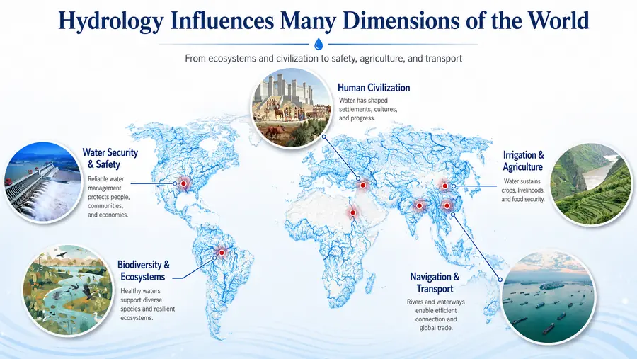
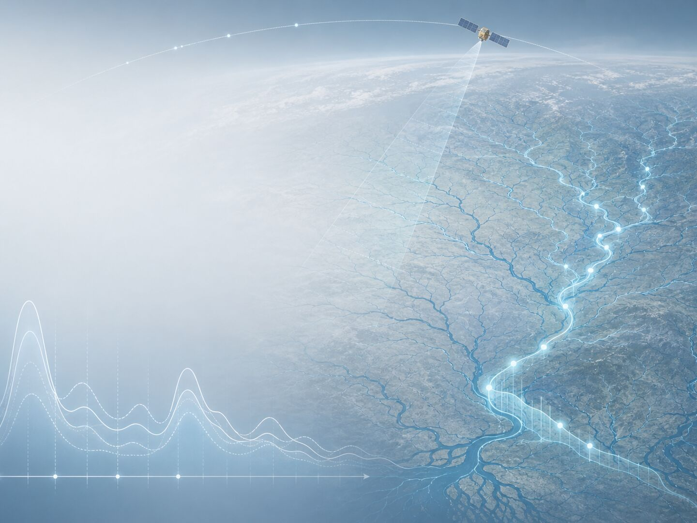
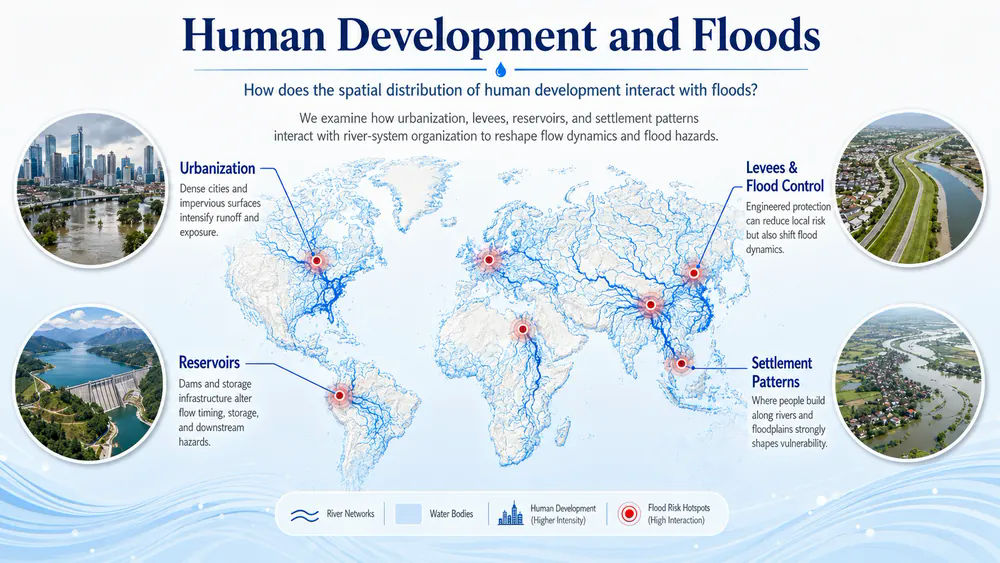

01
Earth observation
Emerging satellite observations and remote sensing characterize rivers and their dynamics at unprecedented spatial and temporal scales.
Peking University · School of Earth and Space Sciences
We study the world’s rivers, their pulses, and human–flood interactions.
We combine geoscience—Earth system science and Earth system models—with geospatial perspectives, including geography, remote sensing, GIS, and spatial analytics, to study the terrestrial water cycle.
Explore our questionsRivers · Hydrological pulses · Flood–human interactions
Core research questions
We investigate how a changing water cycle, river-channel form, and human development come together to shape floods.

01
Climate × human activities
We use Earth-system models, satellite observations, and geospatial analysis to reveal how runoff and river flow are redistributed across landscapes and river networks.
Explore this research
02
Channel form × hydrological pulses
We investigate how channel geometry, flow pathways, and floodplain structure regulate the propagation, attenuation, storage, and spatial expression of hydrological pulses.
Explore this research
03
Development × flood exposure
We examine how urbanization, levees, reservoirs, and settlement patterns interact with river-system organization to reshape flow dynamics and flood hazards.
Explore this researchHow we work
Four complementary tools help us observe, represent, model, and parameterize spatially heterogeneous river systems.

01
Emerging satellite observations and remote sensing characterize rivers and their dynamics at unprecedented spatial and temporal scales.
02
Fine-scale river networks, channel geometry, flow pathways, floodplains, and other spatial information represent the physical organization of river systems.
03
Hydrological and hydraulic models, together with data-driven approaches, connect observations with underlying processes.
04
Location-aware and spatially adaptive approaches improve hydrological prediction by explicitly accounting for heterogeneous river systems.
Lab updates
Recruitment, publications, awards, and milestones from the GeoWater Research Lab.
I am always looking for highly motivated PhD/master/undergraduate students and Postdoctoral Fellows to work in my lab. We study the geography of global inland waters, and we develop physically-based models, data-driven methods, and geographic information data infrastructures to improve our fundamental understanding of the river-climate and river-human relationships. Please reach out to peironglinlin@pku.edu.cn if you are interested in working @ GeoWater lab @ PKU.
Students outside of mainland China are welcome to apply to become a member of the GeoWater lab. Email inquiries to peironglinlin@pku.edu.cn are suggested before formal application.
Congratulations to Xiangyong on his paper accepted at Journal of Hydrology! He conducted a comprehensive analysis of the process parameterization and forcing uncertainties in modeling runoff in the Yarlung Zangbo River Basin. This study lays the foundation of his on-going work that probes into the challenges in modeling snowmelt runoff at mid- to high-latitude regions.
Congratulations to Ziyun Yin and Kaihao Zheng for both winning the National Scholarships (国家奖学金) for PhD and master students. This award represented the highest award levels for graduate students in China.
Our group members have been actively participating in a range of international and national conferences to present their research work. A very productive month out of this!（组内成员参加国际/国内会议，并获奖）
Kaihao presented his master thesis work on modeling flood regulation dynamics at the 2024 IGWG, and won the grand prize award!
Zimin presented his work on understanding river hydraulic geometry and won the first prize award in oral sessions!
Undergrads student Junwei presented his thesis work on understanding the spatio-temporal evolution of the Yangtze River Basin's flood regulation capacity based on remote sensing, and won the first prize award for the poster session!
New PhD student Haomei presented her work on the dynamics of river connectivity and won the second prize award for the poster session!
Ziyun attended a doctoral student conference in Nanjing, Xiangyong attended the annual conference of Geography in Fujian, Kaihao attended a doctoral student conference in Wuhan, all back in their hometowns!
Dr. Lin receives the prestigious Young Scientist Award and will be funded to work on understanding and modeling human disturbances to the global river flows in the next three years. Dr. Lin is now a Boya Youth Scholar!
Welcome to Haomei Lin to join the GeoWater lab as a PhD student!
As PI, Dr. Lin's proposed project on leveraging computer vision in categorizing rivers and improving river discharge estimation was funded by the Beijing Nova Program. We will be working with an interdisciplinary team on this project. Congrats!
We are very glad to have hosted the visit of Prof. Zong-Liang Yang (UT-Austin), and Prof. Wenhong Li (Duke) in the summer. More international collaborations and discussions to come in the new future.（暑期交流）
Our Special Collection at WRR/JGR/JAMES has been online now! Please consider submitting a manuscript to our Special Collection with a theme on "Advances in large-scale hydrological modeling and prediction under global change".（AGU旗下刊物WRR/JGR/JAMES专刊客座）
Co-organizers: Guoqiang Tang (NCAR, USA), Hongli Liu (University of Alberta,USA), Martyn Clark (University of Calgary, Canada), Andy Wood (NCAR, USA), Christel Prudhomme (ECMWF, UK), Peirong Lin (Peking University, China)
Congratulations to Kaihao on his first paper, accepted at Earth System Science Data! He updated the global geomorphic floodplain map by proposing an approach that uses spatially-varying floodplain hydraulic geometry (FHG) parameters.
Zheng, K.#, Lin, P.*, Yin, Z.# (2024): SHIFT: A DEM-Based Spatial Heterogeneity Improved Mapping of Global Geomorphic Floodplains. Earth System Science Data (accepted).
Congratulations to Zimin on his first paper, accepted at Journal of Remote Sensing! This is very rewarding experience for his undergrads thesis work, which now partly extends to his on-going in-depth work on understanding channel geometry worldwide.
Yuan, Z.#, Lin, P.*, Guo, X., Zhang, K., Beck H.E. (2024): Revisiting At-a-Station Hydraulic Geometry using Discharge Observations and Satellite-Derived River Widths. Journal of Remote Sensing (accepted).
Congratulations to Ziyun on her first paper, accepted at Earth System Science Data.
Yin, Z.#, Lin, P.*, Riggs, R., Allen, G.H., Lei, X.#, Ziyan Zheng, Siyu Cai (2024): A synthesis of Global Streamflow characteristics, Hydrometeorology, and catchment Attributes (GSHA) for Large Sample River-Centric Studies, ESSD.
Dr. Lin has won the First Prize Excellence in Teaching Award @ Peking University (北京大学青年教师教学大赛一等奖). This competition is held annually, and each year with ~30 STEM professors participating.
Lab members giving lots of presentations on our work.
PI Dr. Lin, Jie Xu, Xiangyong Lei, and Kaihao Zheng went to Suzhou for attending the first geoinformatics conference.
Xiangyong Lei gave an oral presentation (online) at the AGU Fall Meeting on his work on hydrologic modeling for the Upper Brahmuputra River Basin!
Jie Xu and Kaihao gave oral presentations at the IGWG meeting.
New member join and PhD qualifying exam.
Welcome to Jie Xu for officially joining our group as a postdoc. She will be working remote sensing of river discharge, and will engage closely with our modeling work.
Congrats to Xiongyong Lei for passing PhD qualifying exam. More challenges with fun ahead!
Our close collaborator Dr. Colin J. Gleason visited us @ Peking University!
Two well attended seminars (on average 100 students participating) by Dr. Gleason!
A very informative small workshop on graduate paper writing. We are grateful to Dr. Gleason for sharing very useful methods and tips in academic writing!
Peking roast duck, hotpot, Yunnan Cuisine as dinners, with colleagues and students at PKU.
Serving as convener for the International Research Forum on Sustainable Development Goals.
New semester, new members!
Welcome to Zimin Yuan for officially joining as a PhD student! Welcome Kaihao for officially joining as a masters student.
Welcome to Junwei Su for joining as a undergrad researcher and he will be conducting a Challenge Cup Research Competition with me.
PI Dr. Lin and visiting student Meng Ding, they worked together on a new project together to investigate the intricate relationship between floodplain urban growth and levee construction patterns, their paper was accepted by Nature Sustainability 《自然 可持续》!
Ding, M.#, Lin, P*., S. Gao, J. Wang, Z. Zeng, K. Zheng#, X. Zhou, D. Yamazaki, Y. Gao, Y. Liu (2023). Reversal of the levee effect towards sustainable floodplain management. Nature Sustainability. https://doi.org/10.1038/s41893-023-01202-9' (underscore: undergrads student)
PhD student Ziyun Yin gave an oral talk at the CYWater Summer meeting (国际华人水青协夏季会议）. After that, Ziyun went to Uppsala University (瑞典乌普萨拉大学）for attending a summer school in Natural Hazards in the Anthropocene. She was selected as the only Chinese student to attend the school.
Two students attended the 4th Earth System Modeling and Data Assimilation Forum (第四届表层地球系统模拟与数据同化大讲堂)，and gave poster presentations!
Congrats to Ziyun Yin on winning the first prize (1/70) of the Student Presentation Award!
Congrats to Xiangyong Lei on getting the third prize of the Student Presentation Award.
Four of the GeoWater group members went to Gan Jiang (a tributary of Yangtze River) to conduct field work. We also visited the local hydrology bureau to learn their current water modeling systems, and in-situ measurement techniques.
赣江水文局考察调研、径流观测实践
Dr. Ming Pan from UCSD visited our lab and our institution! He gave a highly insightful talk summarizing the history of hydrologic modeling, and gave a talk on their recent work on LSTM modeling of global streamflow
邀请美国圣地亚哥大学潘铭老师到访做学术报告
Two undergraduate students Zimin Yuan and Kaihao Zheng officially graduated from our group!
Congrats to Zimin and Kaihao to get A score for their undergraduate thesis work!
Congrats to Kaihao on graduating with honors.
Welcome Dr. Wenli Fei to visit GeoWater lab for 1.5 months!
Dr. Wenli Fei just graduated from CAS-IAP, and will be visiting us for 1.5 month at PKU.
Serving as the research committee of IRSGIS @ Peking University, Dr. Lin convened the fourth Geospatial Youth Forum, inviting international and national scholars to gave online presentations at IRSGIS @ PKU.
PI Dr. Lin gave an invited talk at the 5th Earth and Space Informatics Forum @ Suzhou, China.
Invited talk on global floodplain urban growth patterns.
PhD student Xiangyong Lei published an article in Science Bulletin China.
Yang, H., X. Lei#, H. Zheng, W. Fei, Z. Liu, P. Lin* (2023). Assessment of runoff simulation in the Yarlung Zangbo River Basin based on the multi-physics Noah-MP land surface model. Chinese Science Bulletin (In Chinese with English abstract): https://doi.org/10.1360/TB-2023-0091
PI Dr. Lin gave a PICO presentation at the European Geophysical Union (EGU) international conference, Vienna, Austria (2023/4/25).
课题组学生参加北京大学“挑战杯”赛事，并取得好成绩。
Xiangyong Lei gave a talk on the 2022 Pakistan flood and its hydrometeorological drivers, and won the 2nd Prize.
Kaihao Zheng gave a talk on global geomorphic floodplain mapping, and won the 1st Prize.
Zimin Yuan gave a talk on the global hydraulic geometry, and won the 3rd Prize. Congrats all to our group members!
I worked with a group of young hydrologists from China, and we have coauthored a paper on advocating hydrologic data sharing in China. We hope this could help with filling the blanks on global river gauge data maps, improving hydrologic modeling/forecasting skills, and advance our scientific understanding of river flow variability. See published Perspective article below:
Lin, J., B. Bryan, X. Zhou, P. Lin, et al. Making China’s water data accessible, usable and shareable. Nature Water.
Co-authored paper published in Water Resources Research and Nature Water.
Durand et al. (including Lin): A Framework for Estimating Global River Discharge From the Surface Water and Ocean Topography Satellite Mission, WRR.
Xu et al. (including Lin): A global-scale framework for hydropower development incorporating strict environmental constraints, Nature Water.
As Co-I, we obtained a national grant to investigate the water availability and water modeling issues in northeastern China under climate change. Exciting project and great team collaborators for the coming 4 years.
Dr. Lin's first-authored paper is now published in Remote Sensing of Environment! See link here: https://www.sciencedirect.com/science/article/abs/pii/S0034425723000408. In this paper, we critically assessed how the SWOT discharge algorithm BAM/geoBAM perform at three-thousand distinctly located rivers globally. This is one of the few studies that prioritized "global generalizability" over "perfect skills at limited places", where promises and challenges are discussed. We believe similar large-scale assessment would be key to identifying emerging challenges as we move into the new era with global river monitoring capability from space.
Reference: Lin, P., D. Feng, C.J. Gleason, M. Pan, C. Brinkerhoff, X. Yang, H. Beck, R. Frasson (2023): Inversion of river discharge from remotely sensed river widths: A critical assessment at three-thousand global river gauges. Remote Sensing of Environment, 287, 113489.
As PI, Dr. Lin's proposed research project on using multi-source data to understand global river channel geometry was funded by NSFC! Congrats.
Dr. Lin is honorded to be selected for the "College GIS Forum Young Scientist Award" (高校GIS新锐奖) ! Dr. Lin gave a talk at the College GIS Forum on 10/30.
See the News: https://mp.weixin.qq.com/s/by7C1Izgg3zBoM6MruE32g.
课题组成员将参加年底AGU秋季会议以及年底三校国际地理信息论坛 | It's great to see our members from the GeoWater lab submitted their abstracts to the AGU Fall Meeting, and the IGWG 2022 meeting hosted by the HK PolyU, PKU, and Wuhan University. Details below:
Ziyun Yin (first-year PhD student at PKU): oral talk at AGU
Xiongyong Lei (first-year PhD student at PKU): oral talk at IGWG
Meng Ding (visiting student from Kansas State U): oral talk at AGU
Kaihao Zheng (senior-year undergrads): poster at AGU/oral talk at IGWG
Zimin Yuan (senior-year undergrads): oral talk at IGWG
As PI, Dr. Lin's proposed research project on floodplain mapping was funded by the CBAS international center. Dr. Lin was one of the three awardees nationally!
We will work on improving our understanding of the global floodplains in the coming 1.5 years.
Welcome to Ziyun Yin and Xiongyong Lei for officially joining the GeoWater lab as PhD students.
Convened a session on "Climate Adaptation and Mitigation to Changing Water Availability and Water Hazards" in FBAS 2022 International Forum. We are honored to have invited Prof. Qiuhong Tang from CAS, Prof. Yue Qin from Peking University, Prof. Hong Xuan Do from Nong Lam University, Dr. Andrew Smith from Fathom, and Dr. Menaka Revel from University of Tokyo to join us as the invited speaker!
See the session details and recorded video here: https://fbas2022.scimeeting.cn/cn/web/program/14428
I convened a session named "New methods in hydrologic monitoring and modeling" at the 9th summer meeting for CYWater! (together with Gang Zhao from Stanford, Hui Lu from Tsinghua University, Xiaogang He from National University of Singapore, and Yao Li from Xinan University).
Undergraduate student Kaihao Zheng won the First Prize in the Challenging Cup competition for his research work on levee detection advised by Dr. Lin. This competition consists of mostly masters or PhD students (can be in teams or single player), with less than 10% undergrads participating. Kaihao completed the competition on his own and won the award. Big congratulations!
Co-authored paper published in Nature Sustainability! Another work examining our rivers using an earth system science view, and a collaborative effort with the DryRiverRCN team, led by Corey Krabbenhoft. See article link here: https://www.nature.com/articles/s41893-022-00873-0.
Water Resources Research Editors has recommended that I receive the 2021 Editors’ Citation for Excellence in Refereeing for Water Resources Research! Honored to receive such positive feedbacks as a reviewer.
Joining Journal of Remote Sensing as a Young Editorial Board Member.
The prestigious Boya Postdoc Fellowship application is open this year! Check out the application notice here: https://postdocs.pku.edu.cn/tzgg/134996.htm. If you are interested in working at PKU as a postdoc and expand your research topics on using remote sensing/GIS to addressing water-energy-food-ecology nexus problems, you may have the opportunity to work collaboratively with several faculty members in our department (Institute of Remote Sensing and GIS @ PKU), with myself being the major advisor. Note two deadlines are in March and September, respectively. Interested candidates may email peironglinlin@pku.edu.cn and a brief research statement and CV would be helpful.
Several papers that I co-authored are published recently. Check out:
Feng, D., Gleason, C.J., Lin, P., Yang, X., Pan, M., Ishitsuka, Y. (2021): Recent changes to Arctic river discharge (Nature Communications).
Gao, S., Chen, M., Lin, P., Hong, Z., Allen, D., Neeson, T., Hong, Y. (2021): Spatiotemporal variability of global river extent and the natural driving factors revealed by decades of Landsat observations, GRACE gravimetry observations, and land surface model simulations (Remote Sensing of Environment).
Riggs, R., Allen, G.H., David C.H., Lin, P., Pan, M., Yang, X., Gleason, C.J. (2021): RODEO: An algorithm and Google Earth Engine application for river discharge retrieval from Landsat (Environmental Modelling & Software)
I chaired the 3rd International Graduate Workshop on Geoinformatics (IGWG) for a two-day event. This workshop is co-organized by Peking University, Wuhan University, and the Hong Kong Polytechnic University. This year PKU is the leading organizer. 59 students from 14 universities presented their work orally, judged by 10 faculty advisors we invited from PKU, WHU, PolyU, and U Minnesota.
I convened a session named "New methods in hydrologic monitoring and modeling" at the 9th summer meeting for CYWater! (together with Hui Lu from Tsinghua University, Xiaogang He from National University of Singapore, and Yanhong Gao from CAS).
Dr. Lin gave an invited talk at the "Quantitative Remote Sensing Summer School", one of the most influential summer programs at Peking University for the past 20 years. The topic is on the "Role of geospatial information techniques on the global high-resolution river discharge modeling".
Dr. Lin gave an invited talk at Hydro90. 200+ audience showed up, with a lot of great questions. See more about Hydro90 on Twitter (https://twitter.com/hydro90er?lang=en).
I will join Peking University as a tenure-track Assistant Professor! Please contact peironglinlin@pku.edu.cn for further correspondence, or if you are interested in joining us at PKU! (PKU is located in Beijing, China, and the program is from Institute of Remote Sensing and GIS at School of Earth and Space Sciences. We will use an Earth System Science approach to study global water problems @ GeoWater lab)
I published three first-author papers since joining Princeton as a postdoc in June 2018. Check out Lin et al. (2019; WRR), Lin et al. (2020; GRL) and Lin et al (2021; Scientific Data). These three papers all focused on global rivers (e.g., discharge, bankfull width, and drainage density) and would lay the foundation for many ensuing global river studies!
I, together with George Allen (TAMU), Xiao Yang (UNC), Rodrigo Paiva convened a AGU session on "Remote sensing and modeling of global rivers from the headwaters to the ocean".
Peirong is back to work from maternity leave
GeoWater Research Lab